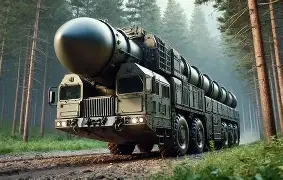

ОРЕШНИК
Красота России в четырех фотографиях — от западных границ до восточных берегов.

Ракетный комплекс «Орешник» — российская баллистическая ракета средней дальности с гиперзвуковыми характеристиками. Впервые официально представлен в ноябре 2024 года. Ключевые тактико‑технические параметры: дальность поражения — до 5500 км; скорость полёта — до 10 Мах (около 12,4 тыс. км/ч); масса боевой части — до 1,5 т; возможность оснащения неядерными и ядерными боевыми блоками (мощность — до 900 кт). Комплекс предназначен для поражения высокозащищённых и заглублённых целей, включая объекты военно‑промышленного комплекса и критически важной инфраструктуры. Гиперзвуковая скорость и особенности траектории существенно затрудняют перехват современными системами ПРО — эффективный перехват возможен лишь на начальной фазе полёта. Серийное производство запущено, отдельные образцы поставлены на боевое дежурство. Предусмотрено размещение комплексов на территории Республики Беларусь при сохранении оперативного управления со стороны РФ. Внедрение «Орешника» направлено на укрепление стратегического баланса и расширение возможностей сдерживания в рамках международных обязательств РФ.